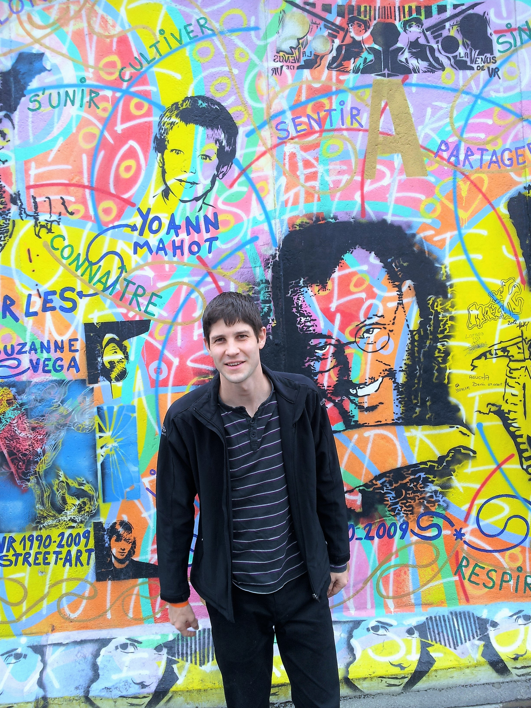

<!DOCTYPE html>
<html lang="en">
<head>
    <meta charset="UTF-8">
    <meta http-equiv="X-UA-Compatible" content="IE=edge">
    <meta name="viewport" content="width=device-width, initial-scale=1.0">
    <title>Adam Sagar - Resume</title>
    <style>
        body, p { font-size: 16px; margin: 0; font-family: Arial, Helvetica, sans-serif; }
        .page { display: flex; flex-direction: row-reverse; height: 100vh; }
        main { width: 75%; margin: 1.5em; border: 2px solid lightgray; }
        aside { background-color: lawngreen; width: 25%; }
        footer { background-color: black; color:white; text-align: center; padding: 1.5em; }
        img { border-radius: 50%; border: 0.5em solid white; }
    </style>
</head>
<body>
    
    <div class="page">
        
        <main>
            <section>
                
            </section>
            <section>

            </section>
            <section>

            </section>
        </main>

        <aside>
            <section>
                
            </section>
            <section>

            </section>
            <section>

            </section>
        </aside>

    </div>

    <footer>
        <p>Created by Adam Sagar, 2023</p>
    </footer>

</body>
</html>